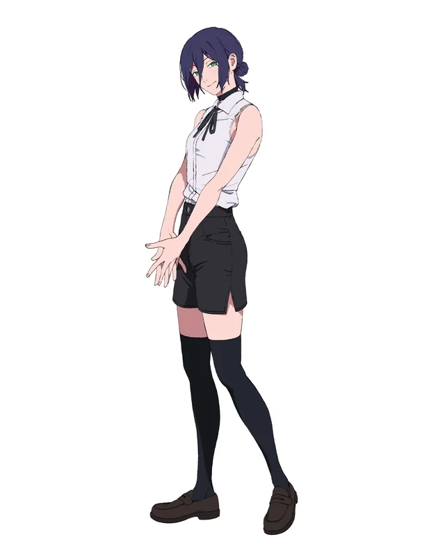
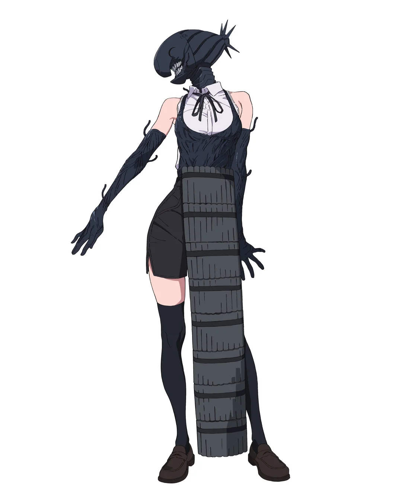

Who is Reze?
Reze, also known as the Bomb Girl or Bomb Devil, is one of the most notable antagonists in Chainsaw Man and the central figure of the Bomb Girl Arc. She initially appears as a cheerful girl working at a small café and quickly forms a warm connection with Denji, showing him a glimpse of the normal life he has always dreamed of.
However, behind this friendly appearance lies a darker truth. Reze is a human–devil hybrid created through secret Soviet military experiments meant to produce living weapons. As the Bomb Devil hybrid, she can transform parts of her body into explosive weaponry, unleashing devastating blasts while regenerating from severe injuries.
Despite her mission to capture Denji's heart, Reze is far from a simple villain. Beneath her destructive power lies a tragic character who longs for freedom and a life she was never allowed to live.
Character Profile
|
 Human Form |
 Devil Form |
|---|---|
| Name | Reze |
| Alias | Bomb Girl, Bomb Devil |
| Affiliation | Gun Devil |
| Origin | USSR Experiments |
Birth of a Devil
Before she became the feared Bomb Girl, Reze was one of many children caught in the shadows of secret military experiments. Hidden from the public, these programs — conducted by the Soviet Union — sought to create powerful devil-human hybrids that could serve as living weapons in global conflicts.
Children like Reze were taken and subjected to brutal experimentation, their bodies forced to merge with the power of devils. Most would never survive such trials. But, Reze did.
The experiment was a success. But in creating the perfect weapon, they erased the chance for her to live a normal life — leaving behind a girl whose existence was defined by destruction.
Relationship with Denji
One of the most compelling aspects of Reze's character is her relationship with Denji. When the two first meet, Reze approaches him with warmth and curiosity, quickly forming a bond that feels genuine and innocent. She takes him swimming, talks with him about school, and shows him the kind of simple happiness Denji has always dreamed of.
"Running away together doesn't sound so bad, does it?"
These moments make Denji fall deeply in love with her. For the first time, he imagines a life outside of violence and devil hunting. However, this happiness is built on deception. Reze was sent with a mission to capture Chainsaw Man's heart.
When her true identity is revealed, the gentle girl Denji trusted disappears, replaced by a deadly assassin capable of devastating destruction. Yet even then, glimpses of her true feelings suggest that part of her genuinely cared for him.
Reze Arc Timeline
- Reze meets Denji outside a café during a rainy evening
- The two begin spending time together and grow closer
- Reze reveals herself as the Bomb Devil hybrid
- A massive battle erupts between Reze and the Devil Hunters
- The Bomb Girl Arc reaches its tragic conclusion
Why Fans Love Reze?
- A complex antagonist with a tragic backstory
- One of the most visually striking devil transformations in the series
- A powerful emotional connection with Denji
- One of the most intense and memorable fights in Chainsaw Man
- A character who represents both danger and lost innocence
Conclusion
Reze is far more than just another enemy in the world of Chainsaw Man. She represents the tragic consequences of a world where people are turned into weapons and forced to live lives they never chose.
Her brief but powerful connection with Denji reveals the humanity still hidden beneath her destructive powers. In the end, Reze stands as one of the most tragic and unforgettable characters in the entire series — a girl who might have lived a normal life, if the world had allowed it.